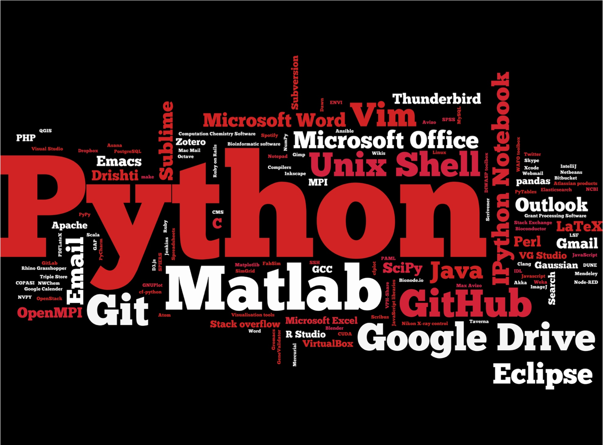

What is Python?
- Interpreted, dynamically typed, object-oriented very high-level language, compiles to bytecode
- Close to pseudocode, indentation marks block structure
Why Python?
- It’s free, well-documented, and runs almost everywhere
- Large (and growing) user base among researchers and scientists
- Simple, readable and easier for beginners to grasp
- Goal is to teach basic programming concepts that can be applied to other programming languages
Cont..
- Can be used for the web and on the client
- Popular for application development on its own
- Used as scripting language in many applications and games
- Gimp
- Battlefield2
- …
Cont..
- Increased productivity:
- No compilation step: The edit-test-debug cycle is incredibly fast.
- Debugging Python programs is easy: a bad input or bug will not cause a segmentation fault.
Why teaching Python3 (3.4)?
- Based on survey conducted by RSG’s Policy researchers:
- 
Python2.x vs Python3
- Python is currently transitioning from version 2 to 3
- Teaching will be in 3.4
Cont..
- Lots of new features of Python3
- Advanced unpacking
- Matrix multiplication
- Chained exceptions
- Everything is an iterator …
- New syntax. New interpreter behaviour. Standard library fixes
- Some have been backported to Python 2.7. (like dictionary/set comprehensions or set literals, future.print_function)
- But there’s more than that.
Basics: Variables, Objects, types and Data Structures
- Introduction to Python variables
- Creating and assigning values to variables
- Everything in Python is really an object
- Types: Built-in types and type handling
- Built-in: String, integers, boolean and floating point
- type(val) returns the type of a variable (also classes)
- int(val[,base]) converts to an integer (of base base)
- float(val): Corresponding to floats
- str(val): Corresponding to strings (classes allow this automatically)
Lists in Python
- Lists as arrays
- Indexing and Slicing
Using Python libraries
- This introduction to Python is built around an end to end scientific example: data analysis
- What is a library (module) and its usage
- Reading data from a file
- Numpy arrays and operations on arrays of data
- Selecting individual values and subsections of data
- Plotting data using
matplotliblibrary
Python Control Flow
- Real power of programs come from:
- Repetition
- Selection
Control Flow: Repeating actions with loops
- What a loop does?
- Writing loops to repeat simple calculations
- Track changes to a loop variable as the loop runs
- Track changes to other variables as they are updated by a
forloop
Control Flow: Making choices
- Write conditional statements including
if,elifandelse - Evaluate expressions containing
andandor
Why indentation?
- Studies show that’s what people actually pay attention to
- Every textbook on C or Java has examples where indentation and bracing don’t match
- Doesn’t matter how much indentation you use, but the whole block must be consistent
- Python Style Guide (PEP 8) recommends 4 spaces
- And no tab characters
Creating Functions
- Defining a function, the parameters that it takes, return value
- Test and debug a function
- Scope of variables
- Set default values for function parameters
- Divide programs into small, single-purpose functions
Command-line Programs
- Using values of command-line arguments in a program
- Handling flags and files separately in a command-line program
- Reading data from standard input in a program
Thank You!
/ − will be replaced by the title